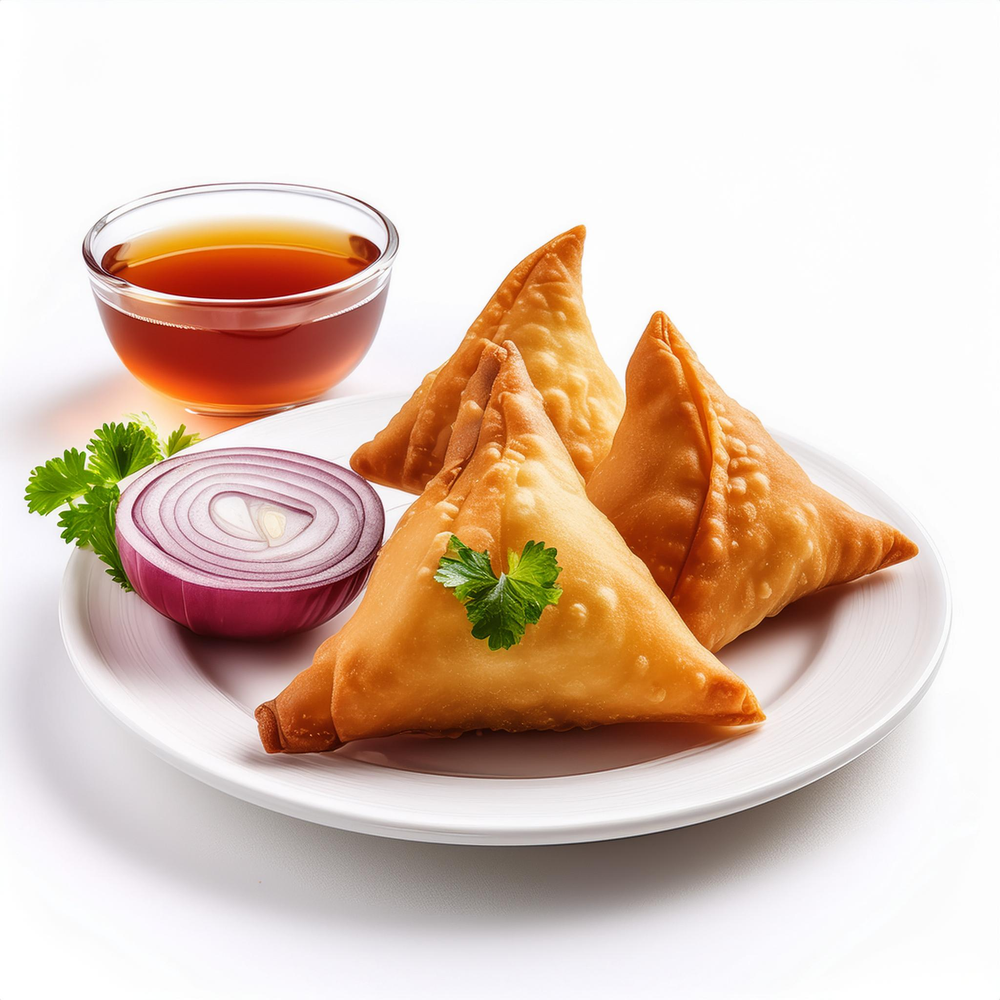
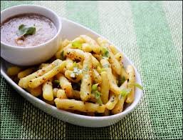

Famous Foods of Chhattisgarh
Chana Samosa

Chana Samosa Recipe:
- Ingredients:
- 1 cup black chickpeas (chana), soaked overnight
- 1 onion, finely chopped
- 1 green chili, chopped
- 1 tablespoon cumin seeds
- 1 teaspoon coriander powder
- 1/2 teaspoon turmeric powder
- 1/2 teaspoon garam masala
- Salt to taste
- 2 cups all-purpose flour
- 1/4 cup ghee or oil (for dough)
- Water (for kneading)
- Instructions:
- Cook the soaked black chickpeas in a pressure cooker until tender.
- Heat oil in a pan, add cumin seeds, and sauté onions and green chili until golden brown.
- Add cooked chickpeas, spices, and salt. Cook until the mixture is dry.
- Prepare the dough by mixing flour, ghee, and water. Knead until smooth.
- Roll out small circles of dough, place a spoonful of filling in the center, and fold into samosas.
- Deep fry the samosas until golden brown. Serve hot.
Faraa

Faraa Recipe:
- Ingredients:
- 1 cup rice flour
- 1/2 cup water (or as needed)
- 1/2 teaspoon mustard seeds
- 1/2 teaspoon cumin seeds
- 1 tablespoon ghee or oil
- Salt to taste
- Instructions:
- Mix rice flour with water to form a soft dough.
- Divide the dough into small balls and flatten them into discs.
- Steam the discs in a steamer or idli maker for 15-20 minutes until cooked.
- Heat ghee or oil in a pan, add mustard seeds and cumin seeds.
- Fry the steamed discs until lightly golden. Serve with chutney or curry.